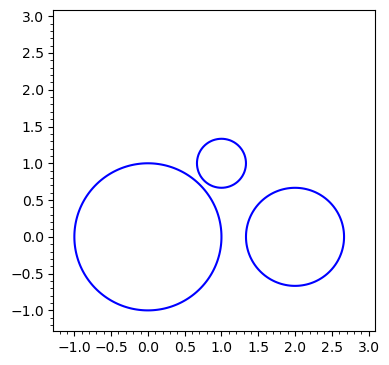

Symbolic Computation#
CAS Foundation#
Intro#
sin(pi)
pi
pi20=n(pi,digits=20);pi20
type(pi20) # pi20 is approximation
plot(sin,(-pi,pi)) # plot of sin function(x not used in plot function)
from sage.misc.citation import get_systems
get_systems('n(pi,digits=20)') # systems used to calculate approximations(real numbers)
[QQ(n(pi,digits=k)) for k in range(1,21)] # rational approximations of pi
pi10=n(pi,digits=10) # pi to 10 decimal places
delta=pi-pi10 # error of approximation
[n(delta,digits=k) for k in range(10,21)] # calculating error
Precision and Accuracy#
#
Precision: The smallest number you can add to one in a system that changes the number.
The decimal system with \(3\) digits has \(1=1.00\).
\(1.00+0.001=1.00\)
\(1.00+0.005=1.01\)
\(0.005\) is the precision of this system.
Accuracy: The relative error of an approximation
Approximation of \(\pi\): \(\frac{22}7\)
Accuracy: \(|\frac{\frac{22}7-\pi}\pi|\)
error=abs((22/7-pi)/pi) # error of 22/7 approximation for pi
n(100*error) # x100 for percentage
type(error)
n(log(error,10)) # logarithm of error(correct digits)
Getting Help#
help(n)
n?
n??
search_doc('numerical approximation') # documentation might not be available
Arbitrary Precision Floating-Point Arithmetic#
RealField?? # default precision 53 bits(cannot use digits)
def conversion(bits):
return ceil(bits*log(10,2))
R8=RealField(conversion(8));R8
Assignments#
exp(ln(2))
approx=n(e,digits=30)
error=abs(e-approx)
print(approx)
n(error,digits=40)
R = RealField(30*log(10,2))
print(tan(R(pi)))
print(R(tan(pi)))
factor(2015)
Rational Approximations#
#
QQ(n(pi,digits=15))
c=continued_fraction(sqrt(2))
ascii_art(c)
conv=list(c.convergents()[:16]);conv # first 16 convergents of sqrt(2)
error=[n(abs(sqrt(2)-convergent)) for convergent in conv]
error
QQ(n(sqrt(2),digits=6))
Assignments#
3^4^5
3^4^5==3^(4^5),3^4^5==(3^4)^5
factor(5^4^3-1)
gcd(12214,2012),xgcd(12214,2012)[0]
approx=continued_fraction(pi).convergents()[:5][4]
n(approx),n(pi)
r=(1+sqrt(5))/2 # golden ratio
num=QQ(n(r,digits=3));print(num)
n(num),n(r),n(golden_ratio) # 4 decimal places(1 skipped)
[QQ(n(r,digits=k)) for k in range(1,11)]
c=continued_fraction(sqrt(3));print(c)
ascii_art(c)
num=c.convergents()[9];print(num)
n(num),n(sqrt(3)) # 5 decimal places
Complex & Algebraic Numbers, Finite Field Extensions#
Complex Numbers#
z=CC.random_element();s(z) # random complex number
real(z),imag(z)
r=abs(z) # radius(polar coords)
t=arg(z) # argument/angle(radians)
r,t
r*cos(t),r*sin(t) # verification of polar coords
P.<x>=CC[];print(P)
factor(x^2+1)
sqrt(-1,all=True)
Algebraic Numbers#
reset() # reset all symbols to default
P.<x>=QQ[];print(P)
p=x^2-2
q=x^2+1
factor(p) # x^2-2 does not have any rational roots
Q.<sqrt2>=QQ.extension(p) # finite field extension to rational numbers(sqrt2)
Q
P1.<y>=Q[];print(P1) # using finite field extension to factor x^2-2
factor(y^2-2),factor(q)
P.<x>=RR[];print(P)
factor(x^2-2) # x^2-2 has 2 irrational roots(roots are approximated)
C.<im>=Q.extension(q) # finite field extension to rational numbers(sqrt2)
C
P2.<z>=C[];print(P2)
factor(z^2+1)
Finite Field Extensions#
reset() # alternatively, restart kernel
Z2=Integers(2);print(Z2)
P.<x>=Z2[]
factor(x^2+1)
q=x^3+x+1
factor(q)
K.<a>=Z2.extension(q);print(K)
[x for x in K]
s(matrix([[x*y for y in K] for x in K])) # every non-zero element has an inverse
1/a^2
Assignments#
def coor(rp,ip):
xc=rp*cos(ip)
yc=rp*sin(ip)
return xc+i*yc
def polar(x,y):
r=abs(x+i*y)
a=arg(x+i*y)
return r,a
lst=polar(1,-2);print(lst)
coor(lst[0],lst[1])
solve(x^3-5==0,x)
z=1+i
s(sqrt(1/z)),s(1/sqrt(z))
bool(sqrt(1/z)==1/sqrt(z))
factor(x^4+3*x+4)
coe=[1]+[0]*13
while sum(coe[:-4])!=0:
for i in range(13):
if coe[i]!=0:
coe[i]-=1
coe[i+3]+=3
coe[i+4]+=4
break
var('z')
poly=0
for i,num in enumerate(coe[-4:]): poly+=num*z^(3-i)
s(poly)
Symbols, Names, References#
Mutability vs Immutability#
var('x y')
x=y # x is immutable by default
y=3 # x is not set to 3
# x=y # we can change this by executing this line(switch order?)
x,y
eval(str(x))
var('x y')
y=3
x=y
x,y
restore('x y') # only resets variables given ?(.VS. reset('x'))
Coefficient extraction & Grouping#
var('a b c d')
p1=a+b*sqrt(2) # 1st part
p2=c+d*sqrt(2) # 2nd part
nexp=p1*p2 # ?(without expansion)
yexp=expand(p1*p2) # product(with expansion)
s(nexp,yexp)
s(yexp.coefficient(sqrt(2))) # coefficient extraction
type(yexp)
coe=yexp.coefficient(sqrt(2))
new_expr=expand(yexp-sqrt(2)*coe) # delete ungrouped part
new_expr+=sqrt(2)*coe # add grouped part
s(new_expr)
restore('a b c d')
Variable Evaluation#
s(sqrt(x^2))
bool(sqrt(x^2)==abs(x))
plot(sqrt(x^2))
s(sqrt(x^2).canonicalize_radical())
sqrt4=sqrt(SR(4),hold=True);s(sqrt4) # sage does not automatically simplify symbols(SR)
s(sqrt4.unhold())
Assignments#
var('a b c d')
solve((a+b*sqrt(2))*(c+d*sqrt(2))==1,c,d) # solve for 1/(a+b*sqrt(2))=c+d*sqrt(2)
reset([c,d])
c=-(sqrt(2)*a*x+2*b*x-1)/(sqrt(2)*b+a)
d=x
bool((a+b*sqrt(2))*(c+d*sqrt(2))==1)
reset([a,b,c,d])
var('a b')
b=a;a=2
a,b
reset([a,b])
var('a b')
a=3
a,b
Number Types & Functions#
#
ZZ,QQ,RR,CC
ZZ(2026).digits(base=16)
ZZ(2026).digits(base=2)
ZZ(ZZ(1717409).digits(base=2),base=10)
# ascii encrypter/decrypter
def encode_ascii(message,base=2): # encrypts message with ascii characters into numbers(bases 2-10,16)
tot=0
for i,char in enumerate(message[::-1]): tot+=ord(char)*(base^7)^i
if base==2: return int(tot.binary()) # debug other options
elif base==8: return int(tot.oct())
elif base==10: return tot
elif base==16: return tot.hex().upper()
elif base<10: return ZZ(ZZ(tot).digits(base=base),base=10)
else: raise ValueError('Invalid base. Valid bases: 2-10,16') # add bases 11-36
def decode_ascii(num,base=2): # decrypts message encrypted using above function(any base)
message=''
for i in range(len(str(num))//7): message+=chr(ZZ(ZZ(int(str(num)[7*i:7*(i+1)])).digits(base=10),base=base))
return message
message=input('Input message(max 18 chars): ')
base=int(input('Input base(2-10,16)'))
if len(message)>18: raise ValueError('Message is too long.')
print(encode_ascii(message,base=base),decode_ascii(encode_ascii(message,base=base)))
ZZ(ZZ().digits(base=10),base=3)
0.1.hex()
RR.prec()
R106=RealField(prec=106)
R106(0.1).hex()
num=RR.random_element()
[num.nearby_rational(max_denominator=10^k) for k in range(1,11)]
id(1)
Assignments#
QQ.random_element()
QQ(pi)
def coor(rp,ip):
xc=rp*cos(ip)
yc=rp*sin(ip)
return xc+i*yc
def polar(x,y):
r=abs(x+i*y)
a=arg(x+i*y)
return r,a
num=CC.random_element()
re=real(num)
im=imag(num)
coor(1,polar(re,im)[1])
R100=RealField(100)
x=R100(sqrt(2));print(x)
lst=[QQ(n(x,digits=k)) for k in range(1,11)];print(lst)
[n(100*abs(val-x)/x) for val in lst]
reset([x])
s(solve(x^3+8*x-3==0,x))
Evaluation & Execution#
#
Z2=Integers(2)
P.<x>=Z2[];P
q=x^2+x+1 # irreducible polynomial
factor(q)
K.<a>=Z2.extension(q);K,list(K)
for x in K: print([x+y for y in K]) # addition table
print('----------------')
for x in K: print([x*y for y in K]) # multiplication table
K.addition_table(),K.multiplication_table()
GF(4).addition_table(),GF(4).multiplication_table()
from sage.ext.fast_callable import ExpressionTreeBuilder
etb=ExpressionTreeBuilder(['x','y']);etb
x=etb.var('x')
y=etb.var('y')
p=x^3+4*x*y^3;p
L1=LabelledBinaryTree([None,None],label='v_0')
L2=LabelledBinaryTree([None,None],label='3')
L3=LabelledBinaryTree([None,None],label='4')
L4=LabelledBinaryTree([None,None],label='v_1')
N12=LabelledBinaryTree([L1,L2],label='ipow')
N31=LabelledBinaryTree([L3,L1],label='mul')
N42=LabelledBinaryTree([L4,L2],label='ipow')
N3142=LabelledBinaryTree([N31,N42],label='mul')
N123142=LabelledBinaryTree([N12,N3142],label='add')
ascii_art(N123142)
fast_callable(p).op_list()
Assignment#
from sage.ext.fast_callable import ExpressionTreeBuilder
etb=ExpressionTreeBuilder(['x','y']);etb
x=etb.var('x')
y=etb.var('y')
p=x^2*y^3-3*x^3+2*y-9;p
L1=LabelledBinaryTree([None,None],label='v_0')
L2=LabelledBinaryTree([None,None],label='2')
L3=LabelledBinaryTree([None,None],label='3')
L4=LabelledBinaryTree([None,None],label='v_1')
L5=LabelledBinaryTree([None,None],label='9')
N12=LabelledBinaryTree([L1,L2],label='ipow')
N43=LabelledBinaryTree([L4,L3],label='ipow')
N13=LabelledBinaryTree([L1,L3],label='ipow')
N24=LabelledBinaryTree([L2,L4],label='mul')
N313=LabelledBinaryTree([L3,N13],label='mul')
N1243=LabelledBinaryTree([N12,N43],label='mul')
N1243313=LabelledBinaryTree([N1243,N313],label='sub')
N124331324=LabelledBinaryTree([N1243313,N24],label='add')
N1243313245=LabelledBinaryTree([N124331324,L5],label='sub')
ascii_art(N1243313245)
from sage.ext.fast_callable import ExpressionTreeBuilder
etb=ExpressionTreeBuilder(['x','y']);etb
x=etb.var('x')
y=etb.var('y')
p=2*x^3*y^5-6*x^3+y^8;p
L1=LabelledBinaryTree([None,None],label='v_0')
L2=LabelledBinaryTree([None,None],label='2')
L3=LabelledBinaryTree([None,None],label='3')
L4=LabelledBinaryTree([None,None],label='v_1')
L5=LabelledBinaryTree([None,None],label='5')
L6=LabelledBinaryTree([None,None],label='6')
L7=LabelledBinaryTree([None,None],label='8')
N13=LabelledBinaryTree([L1,L3],label='ipow')
N45=LabelledBinaryTree([L4,L5],label='ipow')
N47=LabelledBinaryTree([L4,L7],label='ipow')
N213=LabelledBinaryTree([L2,N13],label='mul')
N613=LabelledBinaryTree([L6,N13],label='mul')
N21345=LabelledBinaryTree([N213,N45],label='mul')
N21345613=LabelledBinaryTree([N21345,N613],label='sub')
N2134561347=LabelledBinaryTree([N21345613,N47],label='add')
ascii_art(N2134561347)
Formats & Data#
Use
preparsebefore usingevalto not lose accuracy.Use
openwith'r'or'w'to read/edit the file.saveskips the intermediate step. Loading is also in one step(load).
f=lambda x:x+1
print(f)
pickled=pickle_function(f);print(pickled)
unpickled=unpickle_function(pickled);unpickled(1.5)
def f(x): return x+1
dumps(f) # pickling(without using pickle_function)
Speeding up with Vectorization and Cython#
def python_sum_symbolic(n):
return float( sum(sqrt(1-(k/n)^2) for k in range(1, n+1)) )/n
timeit('4*python_sum_symbolic(1000)')
t1 = cputime()
python_sum_symbolic(10^4)
ct1 = cputime(t1)
print('time for python_sum_symbolic :', ct1)
def python_sum(n):
from math import sqrt
return sum( sqrt(1-(k/n)^2) for k in range(1, n+1) )/n
timeit('4*python_sum(1000)')
t2 = cputime()
python_sum(10^4)
ct2 = cputime(t2)
print('time for python_sum :', ct2)
timeit('python_sum(10^4)')
print('speedup :', ct1/ct2)
def numpy_sum(n):
from numpy import sqrt, sum, arange
x = arange(n)/float(n)
return sum(sqrt(1-x**2))/n
timeit('4*numpy_sum(1000)')
t3 = cputime()
python_sum(10^6)
ct3 = cputime(t3)
print('time for python_sum :', ct3)
t4 = cputime()
numpy_sum(10^6)
ct4 = cputime(t4)
print('time for numpy_sum :', ct4)
print('speedup :', ct3/ct4)
def python_ln_symbolic(n):
return float(sum(ln(1+k/n) for k in range(1,n+1))/n)
timeit('python_ln_symbolic(1000)')
def python_ln(n):
from math import log
return float(sum(log(1+k/n) for k in range(1,n+1))/n)
timeit('python_ln(1000)')
t1=cputime()
for _ in range(10): python_ln_symbolic(1000)
ct1=cputime(t1)/10
t2=cputime()
for _ in range(100): python_ln(1000)
ct2=cputime(t2)/100
print(1000*ct1,1000*ct2) # times in milliseconds
print(f'speedup: {ct1/ct2}') # around 50 times
def numpy_ln(n):
"""
Uses numpy functions to find a unknown constant using ln/log.
[this is where the docstring goes]
"""
from numpy import log,sum,arange
return float(sum(log(1+arange(1,n+1)/n)/n))
timeit('numpy_ln(1000)'),timeit('python_ln(1000)')
t3=cputime()
for _ in range(100): python_ln(25000)
ct3=cputime(t3)/10
t4=cputime()
for _ in range(100): numpy_ln(25000)
ct4=cputime(t4)/10
print(1000*ct3,1000*ct4)
print(f'speedup: {ct3/ct4}')
Polynomials#
Univariate and Multivariate Polynomials#
#
Types of factorisation
Numeric: Defined over the complex numbers
Degree \(d\) polynomial has \(d\) complex roots and \(d\) linear factors.
Exact: Defined over the rational numbers
Number of linear factors = number of rational roots
Symbolic: Defined over the algebraic numbers
Algebraic numbers are added for nonlinear factors.
p=x^3-x^2+2*x-2
p,type(p),factor(p),p.coefficients()
q=QQ[x](p) # rational polynomial
q,type(q),q.degree(),factor(q),list(q),q.coefficients(),q.leading_coefficient(),bool(q==p),bool(type(q)==type(p))
p=PolynomialRing(QQ,x)(x^3-x^2+2*x-2)
p,type(p),p.degree(),factor(p),list(p),p.coefficients(),p.leading_coefficient()
q.roots(CC) # try RR,QQ,ZZ
factor(CC[x](q))
RR[x](x^2+2).is_irreducible()
PR.<x,y>=QQ[];PR # multivariate polynomial ring
p=PR.random_element(degree=5,terms=10);p # default order: degree lexicographic
factor(x^3-1)
pdeglex.<y,x>=PolynomialRing(QQ,order='deglex');p,pdeglex(p)
Assignments#
restore('x')
p=prod([x-k for k in range(20)]);print(p)
q=expand(p)
q.roots(),q.roots(ring=CDF)
var('k l')
x=polygen(QQ)
p=2*x^5+11*x^4+14*x^3+11*x^2+12*x
q=2*x^5+5*x^4+7*x^3+8*x^2+5*x+3
xgcd(p,q)
x=polygen(RR)
s(factor(x^2-2.25))
x=polygen(QQ)
s(factor(x^2-9/4))
restore('x')
p=2*x^5+9*x^4+16*x^3+15*x^2+12*x+9
s(p.roots())
plot(2*x^5+9*x^4+16*x^3+15*x^2+12*x+9,-2.5,0.5)
restore('x y z')
P.<x,y,z>=PolynomialRing(ZZ,order='deglex') # orders by total degree then lex
s(x^2*y*z^4+x*y^4*z^2+x^3) # this polynomial is different for all orderingsd
restore('x y z P')
P.<x,y,z>=PolynomialRing(ZZ,order='lex') # orders by first variable(s)
s(x^2*y*z^4+x*y^4*z^2+x^3)
restore('x y z P')
P.<x,y,z>=PolynomialRing(ZZ,order='degrevlex') # reverses tiebreaking method(same output as deglex for most cases)
s(x^2*y*z^4+x*y^4*z^2+x^3)
P.<x>=Integers(17)[x]
s(factor(x^3+4*x+7))
Rational Expressions and Polynomials#
#
var('x')
expr=(x^3-1)/(x-1);type(expr),expr # expressions have no auto simplification
expr.numerator(normalize=False),expr.numerator(normalize=True),expr.denominator(normalize=False),expr.denominator(normalize=True)
x=polygen(QQ)
r=(x^3-1)/(x-1);type(r),r # auto simplification with polynomials
q=QQ[x].random_element(degree=8)
SR(q).horner(x)
fr=QQ[x].random_element(degree=4)/QQ[x].random_element(degree=4);s(fr),type(fr),s(SR(fr).partial_fraction())
expr=SR(fr)
expr.numerator(normalize=False),expr.numerator(normalize=True),expr.denominator(normalize=False),expr.denominator(normalize=True)
Assignments(do)#
r=(4*x^2 + x)/(x^2 + 4)
r.operands(),r.operator()
Expression Trees#
set_random_seed(191854)
P.<x,y,z>=QQ[]
p=SR(P.random_element(degree=13,terms=3));print(p)
print(p.operands(),p.operator())
p0=p.operands()[0]
p1=p.operands()[1]
p2=p.operands()[2]
print(p0.operands(),p0.operator())
print(p1.operands(),p1.operator())
print(p2.operands(),p2.operator())
p00=p0.operands()[0]
p01=p0.operands()[1]
print(p00.operands(),p00.operator())
print(p01.operands(),p01.operator())
p11=p1.operands()[1]
p12=p1.operands()[2]
print(p11.operands(),p11.operator())
print(p12.operands(),p12.operator())
p20=p2.operands()[0]
print(p20.operands(),p20.operator())
leafx=LabelledOrderedTree([],label='x')
leafy=LabelledOrderedTree([],label='y')
leafz=LabelledOrderedTree([],label='z')
leaf2=LabelledOrderedTree([],label='2')
leaf4=LabelledOrderedTree([],label='4')
leaf5=LabelledOrderedTree([],label='5')
leaf11=LabelledOrderedTree([],label='11')
leafc0=LabelledOrderedTree([],label='-3/4')
nodey11=LabelledOrderedTree([leafy,leaf11],label='^')
nodez2=LabelledOrderedTree([leafz,leaf2],label='^')
nodey5=LabelledOrderedTree([leafy,leaf5],label='^')
nodez4=LabelledOrderedTree([leafz,leaf4],label='^')
nodex2=LabelledOrderedTree([leafx,leaf2],label='^')
term0=LabelledOrderedTree([nodey11,nodez2],label='*')
term1=LabelledOrderedTree([leafx,nodey5,nodez4,leafc0],label='*')
term2=LabelledOrderedTree([nodex2,leafy,leafz,leaf2],label='*')
final=LabelledOrderedTree([term0,term1,term2],label='+')
ascii_art(final)
f=fast_callable(p,vars=['x','y','z']) # using fast callable, we can also create binary expression trees
timeit('f(1,2,3)'),timeit('p(x=1,y=2,z=3)') # speedup: ~15
f.op_list()
Symbolic Expressions#
flowchart
fs[Factorisation] --> rf[Root Finding]
rf --> av[Algebraic View]
rf --> nv[Numeric View]
rf --> ev[Exact View]
rf --> sv[Symbolic View]
fs --> av
nv --> cn[Complex Numbers]
ev --> irff[Integers, Rationals, Finite Fields]
tc[Type Casting] --> nv
tc --> ev
tc --> sv
sv --> en[Extended Numbers]
ex[Expansion] --> rf
ex --> fs
var('x y')
p=(x+y)^2+1/(x+y)^2;s(p) # we are trying to simplify without expanding the numerator
s(factor(p)) # factor() expands the numerator
var('z')
q=p.subs({x+y:z});s(q) # .subs() directly substitutes
s(factor(q))
new_p=q(z=x+y);s(new_p) # this syntax also works for single variables
bool(new_p==p)


reset('x y p q')
var('a b c')
p=a+2*b+3*c;s(p)
q=p.subs({a:b,b:c,c:a});s(q) # p(a=b,b=c,c=a) also works
r=p(a=b)(b=c)(c=a);s(r) # using .subs() 3 times also works
reset('a b c p q r')
var('a b c x')
p=(a+b+c)*(x^2+x+1);s(p) # no expansion due to expression swell
s(ZZ[a,b,c][x](p)) # we could have also done substitution
expand((x+y)^2+1/(x+y)^2)
Normalizing Expressions#
We can determine whether expressions are the same by putting them in normal form.
Consider \(p=x(1+y)\) and \(q=x+xy\). These are mathematically equivalent but are different expressions.
p=x*(1+y)
q=x+x*y
print(p.operator(),q.operator()) # p and q are different expressions
d=p-q;s(d) # no expansion due to possibility of expression swell
s(expand(d)) # force expansion
set_random_seed(20260510)
P.<x,y>=PolynomialRing(ZZ,order='lex')
p=P.random_element();s(p)
Q.<x,y>=PolynomialRing(ZZ,order='deglex')
q=Q(p);s(q) # expression is different from p
s(ZZ[x,y](p),ZZ[x,y](q))
s(integrate((x^2+2*x+1+(3*x+1)*sqrt(x+ln(x)))/(x*sqrt(x+ln(x))*(x+sqrt(x+ln(x)))),x))
integrate??
Review(1-15)#
type(1.0+10^-32),type(1+10^-32)
The difference between 1.0+10^-32 and 1+10^-32 is 1.0 means it is a real number and 1 does not specify which makes the second a rational.
gelfond_schneider=2^sqrt(2)
rat_apr=QQ(n(gelfond_schneider,digits=5));print(rat_apr)
# definitions={} # run to initialize
def whatis(term,definition=None):
if definition!=None: definitions.update({term:definition})
elif term in definitions: return definitions[term]
else: return f'call again with the definition for {term}'
whatis('hihihihihihihihihihi')
def python_sum(n):
from math import cos,pi
return float(pi/n*sum(cos(-pi/2+i*pi/n) for i in range(1,n)))
timeit('python_sum(1000)')
def numpy_sum(n):
from numpy import arange,cos,pi
return float(pi/n*sum(cos(-pi/2+i*pi/arange(1,n))))
timeit('numpy_sum(1000)')
reset('x')
P.<x>=Integers(29)[x]
factor(25*x^3+12*x^2+26*x+4)
var('x')
s(factor(x^4+x^2+1))
P.<x>=Integers(2)[x]
s(factor(x^4+x^2+1))
var('x')
p=(x^2-1)/(x-1)
s(p)
s(p.numerator(normalize=True)/p.denominator(normalize=True))
Calculus#
Defining Mathematical Functions#
var('x y')
f=exp(-x^2-y^2)*(sin(x)+cos(x))
plot3d(f,[-2,2],[-2,2],adaptive=True) # adaptive creates texture and colour
s(integral(f,x))
def func(x,y): return f(x=x,y=y)
type(func)
plot(unit_step)
plot(1/(1+exp(-32*x)))
kronecker_delta(0,0)
f=piecewise([[(-infinity,0),0],[(0,infinity),1]])
f(1)
Recursion & Memoization#
from functools import cache # use dictionary/list indexing memoization for large inputs
import sys
sys.setrecursionlimit(10**8)
@cache
def fib(n): # for memoization, run first 2 lines
if 0<=n<=1: return n
return fib(n-1)+fib(n-2)
import time
loops=10**6
size=3000
start=time.time()
for _ in range(loops): fib(size)
time_took=(time.time()-start)/loops
print(f'Time took for `fib({size})`({loops} loops): {round(time_took*10**9,3)}ns')
import sys
sys.setrecursionlimit(10^8)
memo={0:0,1:1}
def memo_fib(n):
if n in memo: return memo[n]
ans=memo_fib(n-1)+memo_fib(n-2)
memo.update({n:ans})
return ans
timeit('num=memo_fib(300000)')
# sierpinski's fractal from pascal triangle
def line(num):
ans=''
for i in range(num+1):
if binomial(num,i)%2: ans+=' '
else: ans+='@ '
return ans
size=2^4
for num in range(size): print(' '*(size-num-1)+line(num))
L0=LabelledBinaryTree([],'F(0)')
L1=LabelledBinaryTree([],'F(1)')
L2=LabelledBinaryTree([L0,L1],'F(2)')
L3=LabelledBinaryTree([L1,L2],'F(3)')
L4=LabelledBinaryTree([L2,L3],'F(4)')
L5=LabelledBinaryTree([L3,L4],'F(5)')
L6=LabelledBinaryTree([L4,L5],'F(6)')
L7=LabelledBinaryTree([L5,L6],'F(7)')
L8=LabelledBinaryTree([L6,L7],'F(8)')
L9=LabelledBinaryTree([L7,L8],'F(9)')
ascii_art(L9)
[chebyshev_T(k,x) for k in range(10)]
Computing with Functions#
size=5
lst=[var('x%d'%k) for k in range(size)];print(lst[1:])
def f(i): return lst[i]^3+sum([(i+j+1)*lst[j] for j in range(1,size) if i!=j])-1
for i in range(1,5): s(f(i))
var('t')
x(t)=120/45*t
y(x)=x*(120-x)
f(t)=y(x=x(x=t))
plot(f,0,120,aspect_ratio=1/50)
set_random_seed(193935)
m=8
size=5
C=[QQ.random_element() for _ in range(m)];print(C)
E=[tuple([abs(ZZ.random_element()) for _ in range(size)]) for _ in range(m)];E
# i test exact and approximate newton-raphson methods
def exact_newton_raphson(f,prev,steps=1):
ans=f(x=prev)
for _ in range(steps):
ans=prev-f(x=prev)/diff(f,x)(x=prev)
prev=ans
return ans
def approx_newton_raphson(f,prev,steps=1,digits=16):
ans=n(f(x=prev),digits=digits+10)
for _ in range(steps):
ans=n(prev-f(x=prev)/diff(f,x)(x=prev),digits=digits+10)
prev=ans
return ans
d=10000
n(sqrt(2),digits=d),approx_newton_raphson(x^2-2,2,steps=50,digits=d) # digit accuracy doubles each step for x^2
Symbolic, Numeric, Implicit Differentiation#
Solutions |
category |
depends |
error |
|---|---|---|---|
Analytical/Closed-form |
Exact |
Symbolic computation |
error-free |
Series |
Approx. |
Symbolic + Numerical Truncation |
controlled error |
Numerical |
Approx. |
Numerical computation |
rounding & discretization error |
Asymptotic/Perturbation |
Approx. |
Symbolic computation |
asymptotic error |
Semi-analytical |
Approx + Exact |
Symbolic + Numerical |
partly error-free |
f=sin(2*pi*x)
[diff(f,x,k) for k in range(1,5)]
P.<x,y>=QQ[]
q=P.random_element(degree=5,terms=8);print(q,type(q))
f=SR(q);print(f,type(f)) # this is an expression
func(x,y)=f;print(func,type(func)) # this is a function
print(func(1,1)) # functions have direct input based on variable order
print(f(x=1,y=1)) # expression require input with variables
try: print(f(1,1)) # TypeError without variables
except TypeError as error: print(f'TypeError: {error}')
func_no_var(z)=z # functions define variables when needed
reset('z')
try: f_no_var=z # expressions require fixed variables
except NameError as error: print(f'NameError: {error}')
from scipy.differentiate import derivative as numdiff
f(x)=sin(2*pi*x)
numdiff(f,1.0,dx=1)
var('x y')
circle=x^2+y^2-1
circ=implicit_plot(circle,(x,-1.2,1.2),(y,-1.2,1.2),figsize=4);show(circ)
Y(x)=function('Y')(x)
dy=diff(Y,x);print(dy)
Ycircle=circle(y=Y)
dc=diff(Ycircle,x);print(dc)
sol=solve(dc,dy);print(sol)
slope=sol[0].rhs()
set_random_seed()
angle=RR(pi)*RR.random_element();print(angle)
a,b=cos(angle),sin(angle);print(a,b)
print(-a/b)
valslope=slope.subs({Y(x):b}).subs({x:a});print(valslope)
plotpoint=point((a,b),color='red',size=50)
tangent=y-b-valslope*(x-a)
print(tangent)
show(plotpoint+circ+implicit_plot(tangent,[x,-1.5,1.5],[y,-1.5,1.5]))
other_tangent=b+valslope*(x-a);print(other_tangent)
show(plotpoint+circ+plot(other_tangent,xmin=-1.5,xmax=1.5,ymin=-1.5,ymax=1.5))
Integration and Summation#
Typical definite integrals(continuous) do not work at singularities(a type of discontinuity).
Infinite summations(discrete): \(\sum_{k=1}^\infty\frac1{k^2}=\frac16\pi^2\)
try: s(integral(1/x^2,x,-1,1)) # by using the standard method, this integral is convergent(wrong)
except Exception as error: print('error:',error)
s(sum(1/x^2,x,1,oo))
f=cos(x);print('f:',f)
deri=diff(f,x);print('derivative:',deri)
integr=integral(f,x);print('integral:',integr)
print(bool(diff(integral(f,x),x)==f)) # fundamental theorem of calculus
print(bool(integral(diff(f,x),x)==f)) # invertible
print(integral(cos(exp(-x^2)),x)) # no symbolic antiderivative/integral
var('x k')
S=sum(x,x,1,k,hold=True)
s(S,'=',S.unhold());s(factor(S.unhold()))
var('x k r')
S=sum(x^r,x,1,k,hold=True)
s(S,'=',S.unhold());s(factor(S.unhold())) # S.unhold() should use geometric series formula
Series and Approximations#
size=int(input())
time=cputime()
ra=size^0.77
tcos=taylor(cos(x),x,0,size)
show(plot(tcos,xmin=-ra,xmax=ra,figsize=4)+plot(cos,xmin=-ra,xmax=ra,figsize=4))
pcos=tcos.power_series(QQ);print(pcos) # put taylor series in QQ
icos=pcos.inverse();print(icos) # inverse of power series
print(pcos*icos,icos*pcos) # test for inverse
print(f'time took: {round(cputime(time),10)}')
taylor(function('f')(x),x,0,4) # taylor series formula
g = x/(1-x-x^2) # fibonacci generating function(expanded using taylor series)
tg = taylor(g, x, 0, 10)
print(tg)
print(tg.coefficients())
var('x y a b')
circle=x^2+y^2-1
tc=taylor(circle,(x,a),(y,b),1);tc
angle=RR.random_element()*RR(pi);print(f'angle: {angle}')
# angle=pi/2
A,B=cos(angle),sin(angle);print(f'x: {A}, y: {B}')
tangent=tc(a=A,b=B);print(f'tangent: {tangent} = 0')
try: slope=-A/B
except: slope=infinity
print(f'slope: {slope}')
pp=point((A,B),size=25,color='red')
tangent_plot=implicit_plot(tangent,xrange=[-1.5,1.5],yrange=[-1.5,1.5],figsize=3,color='blue')
circ_plot=implicit_plot(circle,xrange=[-1.2,1.2],yrange=[-1.2,1.2],figsize=3,color='green')
show(circ_plot+pp+tangent_plot)
size=9.5
P.<z>=PowerSeriesRing(QQ);print(P)
ts=taylor(sin(x),x,0,20);print(f'taylor series for sin: {ts}') # 20 is quite chunky
pd=sin(z).pade(7,7);print(f'pade approximation for sin: {pd}') # much better approximation globally
show(plot(sin(x),xmin=-size,xmax=size)+plot(pd,xmin=-size,xmax=size,color='red')+plot(ts,xmin=-size,xmax=size,color='green',figsize=4))
Symbolic-Numeric Computing#
Interval arithmetic
RIF(Real interval field): Field of real numbers that tracks floating-point error and returns interval instead of exact value.
prec=for different precision. Higher precision -> less error.
CIF(Complex interval field): Same as RIF except with complex numbers.
d=int(input()) # few values work
formula(x,y)=(QQ(333.75)-x^2)*y^6+x^2*(11*x^2*y^2-121*y^4-2)+QQ(5.5)*y^8+x/(2*y)
exact=formula(77617,33096)
print(f'exact answer: {exact}')
numerical=n(exact,digits=16)
print(f'numerical approx: {numerical}')
num_prec=formula(n(77617,digits=d), n(33096,digits=d))
print(f'approx with limited prec: {n(num_prec,digits=16)}')
num=formula(RIF(77617),RIF(33096));print(num,type(num)) # RIF(real interval field) gives error with e22 magnitude of error
bound=RIF(num);print(bound.str(style='brackets')) # bracket notation
print(bound.diameter()) # .diameter() is range
error=int(bound.upper())-int(bound.lower());error
R100=RealIntervalField(prec=100);print(R100) # extra precision for less error
num=formula(R100(77617),R100(33096))
bound=RIF(num);print(bound.str(style='brackets'))
print(bound.diameter())
error=int(bound.upper())-int(bound.lower());error
R200=RealIntervalField(prec=200);print(R200)
num=formula(R200(77617),R200(33096))
bound=RIF(num);print(bound.str(style='brackets'))
print(bound.diameter())
error=int(bound.upper())-int(bound.lower());error # no error now
P.<x>=PolynomialRing(QQbar) # factor with roots in complex ring
q=x^3+x+1
factor(q) # ? means uncertainty
q.roots(CIF)
R=q.roots(ComplexIntervalField(prec=200));R
prod([(x-r) for (r,m) in R]) # almost x^3+x+1
var('x y z')
target=x^2+2*x*y*z-z^2
constraint=x^2+y^2+z^2-1==0
show(implicit_plot3d(target-1,(x,-2,2),(y,-2,2),(z,-2,2),color='red')+
implicit_plot3d(constraint.lhs(),(x,-2,2),(y,-2,2),(z,-2,2),color='blue'))
# export html and open in browser
# gradients of surfaces
ft(x,y,z)=target;print(ft)
gt=diff(ft);print(gt)
fc(x,y,z)=constraint.lhs();print(fc)
gc=diff(fc);print(gc)
var('w')
eqs=[gt(x,y,z)[k]-w*gc(x,y,z)[k] for k in range(3)];print(eqs)
eqs.append(constraint.lhs());print(eqs)
sols=solve(eqs,[x,y,z,w]);sols
L=[[e.rhs() for e in sol] for sol in sols];L
T=[e[:3] for e in L];print(T)
[ft(x,y,z) for (x,y,z) in T]
Plotting and Solving Equations#
2D Plots#
show(plot(exp(-x^2)*sin(pi*x^3),(x,-2,2),color='blue',figsize=4)+
plot(exp(-x^2),(x,-2,2),color='red')+
plot(-exp(-x^2),(x,-2,2),color='green')) # sinusoidal curve with bounds
plot(1/(x^3-x),(x,-2,2),ymin=-5,ymax=5,detect_poles='show',figsize=4) # handling singularties & asymptotes
watt=(x^2+y^2)^3+5.12*(x^2+y^2)^2-5.15*(x^4-y^4)-14.7456*y^2
show(implicit_plot(watt==0,xrange=[-1.5,1.5],yrange=[-1.5,1.5],figsize=4))
x, y = var('x,y')
show(plot3d(cos(x*y), (x, -pi, pi), (y, -pi, pi)),viewer='tachyon',figsize=3)
var('r t')
polar=watt(x=r*cos(t),y=r*sin(t));print(polar)
polar=polar.trig_simplify();print(polar)
sols=solve(polar,r);print(sols) # we see that this degree 6 function has a double root at the origin(invisible)
polar_plot(sols[0].rhs(),(t,0,2*pi),figsize=4,color='forestgreen',axes=False) # 0, 1 work, 2, 3 are complex, 4 is singularity
var('r t')
polar_plot(r^2,(t,0,2*pi),figsize=4) # polar coordinates
var('t')
parametric_plot((sin(2*t),sin(3*t)),(t,0,2*pi),figsize=4) # lissajous curve in parametric form
Animating Plots(come back later)#
f(k)=exp(-x^2)*sin(2*k*pi*x)
one=plot(f(1),(x,-2,2),figsize=3)
two=plot(f(2),(x,-2,2),figsize=3)
show(animate([one,two]))
![]()
frames=[plot(f(i),(x,-2,2),figsize=5) for i in range(1,11)]
show(animate(frames),iterations=5,delay=1)
Solving Equations#
Problem of Apollonius: Find a circle that touches 3 fixed circles.
There are different cases with different solutions(can be small in the middle or large with 3 circles in it).
# One circle(inside or outside for unit circle)
unitcircle=circle((0,0),1)
angle=RR(pi)*RR.random_element()
if randint(1,2)==1: radius=abs(RR.random_element())
else: radius=abs(RR.random_element())+1
rpt=((1-radius)*cos(angle),abs(1-radius)*sin(angle));print(rpt)
ppt=point(rpt,color='red',size=radius*70)
tangent=circle(rpt,radius,color='green')
show(unitcircle+ppt+tangent,figsize=2,axes=False)
# Two circles(inside and outside for unit circle)
unitcircle=circle((0,0),1)
angle=RR(pi)*RR.random_element()
radius=abs(RR.random_element())
rpt=((1-radius)*cos(angle),abs(1-radius)*sin(angle));print(rpt)
ppt=point(rpt,color='red',size=radius*70)
inner=circle(rpt,radius,color='green')
rpt2=((1+radius)*cos(angle),abs(1+radius)*sin(angle))
ppt2=point(rpt2,color='red',size=radius*70)
outer=circle(rpt2,radius+2,color='green')
show(unitcircle+ppt+ppt2+inner+outer,figsize=2,axes=False)
# 3 circles(1 inner+2 outer)
unitcircle=circle((0,0),1)
angle=RR(pi)*RR.random_element()
radius=abs(RR.random_element())
rpt=((1-radius)*cos(angle),abs(1-radius)*sin(angle));print(rpt)
ppt=point(rpt,color='red',size=radius*70)
inner=circle(rpt,radius,color='green')
rpt2=((1+radius)*cos(angle),abs(1+radius)*sin(angle))
ppt2=point(rpt2,color='red',size=radius*70)
outer1=circle(rpt2,radius,color='green')
outer2=circle(rpt2,radius+2,color='green')
show(unitcircle+ppt+ppt2+inner+outer1+outer2,figsize=2,axes=False)
c1x,c1y,r1=0,0,1
c2x,c2y,r2=2,0,2/3
c3x,c3y,r3=1,1,1/3
var('x y r')
c1=(x-c1x)^2+(y-c1y)^2-r1^2
c2=(x-c2x)^2+(y-c2y)^2-r2^2
c3=(x-c3x)^2+(y-c3y)^2-r3^2
p1=implicit_plot(c1,(x,-1.2,3),(y,-1.2,3))
p2=implicit_plot(c2,(x,-1.2,3),(y,-1.2,3))
p3=implicit_plot(c3,(x,-1.2,3),(y,-1.2,3))
show(p1+p2+p3,figsize=5)
